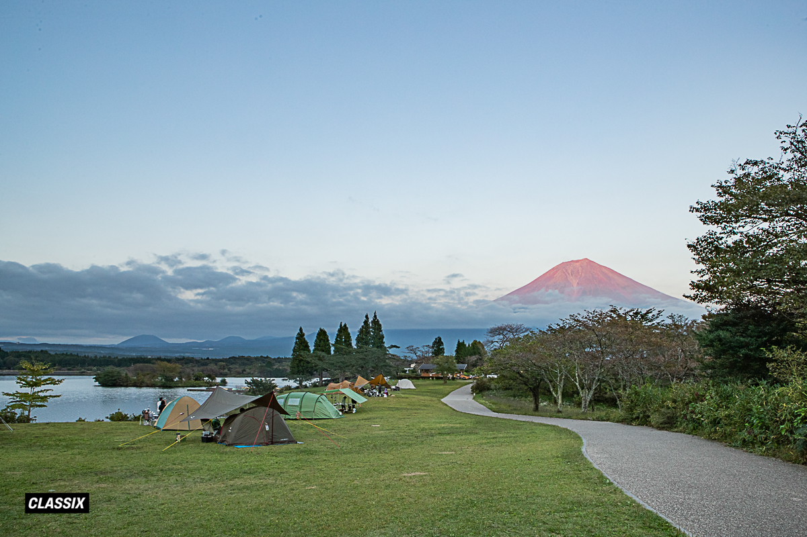
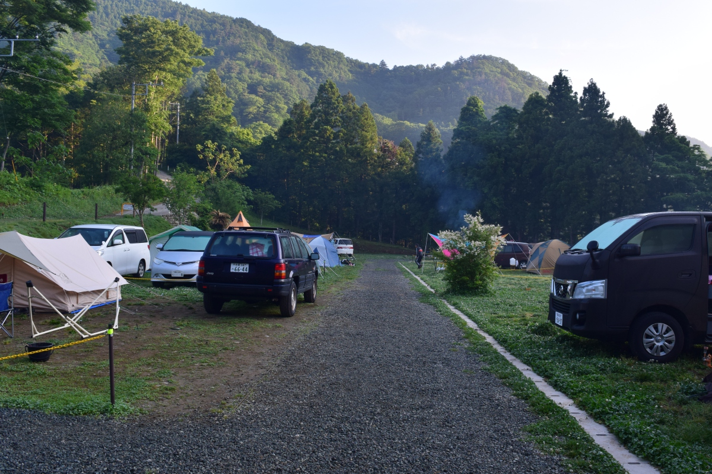
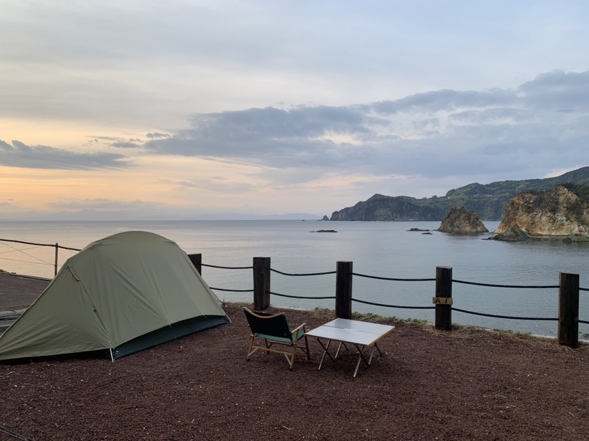
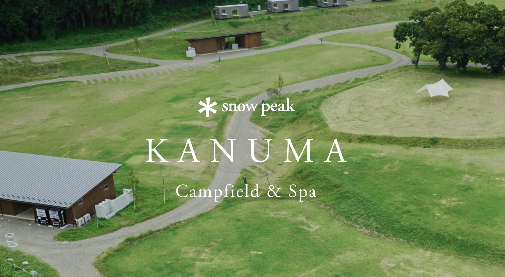

Vị trí Camping
Camp Nhà Thỏ hỗ trợ đưa đón đến các bãi camping đẹp quanh khu vực Kanto, Nhật Bản
Lọc theo
Hiển thị 15 / 15 bãi

Fumotoppara Camping Ground
Fumotoppara
Xem trên Google MapsBãi camping với view núi Phú Sĩ tuyệt đẹp, không gian rộng rãi và yên tĩnh. Địa điểm lý tưởng để tận hưởng thiên nhiên và ngắm cảnh hoàng hôn, bình minh.
- View núi Phú Sĩ tuyệt đẹp
- Bãi cỏ rộng rãi, thoáng đãng
- Phù hợp cho nhóm nhỏ và gia đình
- Tiện lợi cho chụp ảnh và ngắm cảnh

Koan Camping Ground
浩庵キャンプ場
Xem trên Google Maps
Địa điểm camping với view tờ 1000 yên nổi tiếng.
Được xem là một trong những địa điểm camping đẹp nhất ở Phú Sĩ.
- Tầm nhìn có hồ và núi
- Không gian thoáng đãng
- Môi trường trong lành
- Phù hợp cho cặp đôi và nhóm nhỏ

Asagiri Camp Base Sorairo
朝霧Camp Base そらいろ
Xem trên Google Maps
Bãi camping 朝霧Camp Base そらいろ nằm gần khu vực Fumotoppara,
phù hợp cho những bạn muốn trải nghiệm không khí camping ở vùng chân núi Phú Sĩ.
- Gần khu vực Fumotoppara
- Không gian thoáng, gần thiên nhiên
- Phù hợp cho nhóm nhỏ và gia đình

Fujisan Wild Adventure
富士山ワイルドアドベンチャー
Xem trên Google Maps
Fujisan Wild Adventure là khu vực camping và trải nghiệm ngoài trời nằm gần chân núi Phú Sĩ,
phù hợp cho những bạn thích hoạt động, không khí hoang dã và muốn thử nhiều trải nghiệm khác nhau.
- Gần khu vực núi Phú Sĩ
- Nhiều hoạt động và trải nghiệm ngoài trời
- Phù hợp cho nhóm bạn thích khám phá

Fujiminooka Auto Camping Ground
富士見の丘オートキャンプ場
Xem trên Google Maps
Fujiminooka Auto Camping Ground là bãi camping với không gian rộng rãi,
có thể nhìn về khu vực núi Phú Sĩ và phù hợp cho cả nhóm bạn lẫn gia đình.
- Dễ bố trí nhiều lều
- Khu vực gần núi Phú Sĩ
- Phù hợp cho nhóm bạn và gia đình

Lake Tanuki Camp Ground
田貫湖キャンプ場
Xem trên Google MapsBãi camping ven hồ Tanuki (田貫湖), khu vực chân núi Phú Sĩ — không gian hồ nước dễ chịu, thường được yêu thích vào mùa hè và khi lá đổi màu mùa thu.
- Gần hồ, không khí mát và trong lành
- Có góc ngắm núi Phú Sĩ đặc trưng vùng hồ
- Phù hợp nghỉ cuối tuần, nhóm nhỏ và gia đình

Aone Camping Ground
青根キャンプ場
Xem trên Google Maps
Aone Camping Ground là bãi camping gần Tokyo, phù hợp cho chuyến đi ngắn cuối tuần.
Khu vực gần suối, không khí mát mẻ vào mùa hè.
- Gần Tokyo, tiện di chuyển
- Gần suối, phù hợp vui chơi mùa hè
- Phù hợp cho nhóm bạn và gia đình

Nagatoro Auto Campground
長瀞オートキャンプ場
Xem trên Google Maps
Nagatoro Auto Campground là bãi camping ven sông tại Saitama,
phù hợp cho nhóm bạn và gia đình muốn kết hợp hoạt động ngoài trời và nghỉ ngơi thư giãn.
- Vị trí ven sông, không khí mát mẻ
- Nằm trong khu vực Saitama, tiện di chuyển từ Kanto
- Phù hợp cho nhóm bạn và gia đình

Tanoue Camping Ground
田の上キャンプ場
Xem trên Google MapsBãi camping với không gian thiên nhiên yên tĩnh.
- Không gian thoáng đãng
- Gần bãi biển
- Gần Hitachi Kaihin Park

The CLIFF CAMP&BBQ
The CLIFF CAMP&BBQ
Xem trên Google MapsBãi camp kết hợp BBQ sát biển, phù hợp cho chuyến đi ngắn cuối tuần và tiện di chuyển từ khu vực Tokyo.
- Không khí biển thoáng đãng
- Tiện đi từ Tokyo và vùng Kanto
- Phù hợp đi nhóm bạn hoặc gia đình

Camp Koganezaki
キャンプ黄金崎
Xem trên Google MapsBãi camp sát biển Koganezaki với khung cảnh thoáng đãng, phù hợp chuyến đi thư giãn vào mùa hè và mùa thu.
- Vị trí gần biển, không khí mát
- Phù hợp camping ngắm hoàng hôn
- Thích hợp cho nhóm nhỏ và gia đình

Beach camp ugusu
宇久須キャンプ場
Xem trên Google MapsBãi camp ven biển Ugusu phù hợp cho các chuyến đi mùa hè, mùa thu với không gian thoáng và thư giãn.
- Vị trí gần biển, dễ chill cuối tuần
- Phù hợp đi nhóm nhỏ và gia đình
- Thích hợp camping ngắm cảnh biển
Snow Peak AKAGI Campfield
スノーピーク赤城キャンプフィールド
Xem trên Google MapsKhu campfield của Snow Peak tại Akagi với không gian rộng và cảnh quan thiên nhiên phù hợp cho mùa hè, mùa thu.
- Không khí thoáng mát, dễ chịu
- Phù hợp cắm trại gia đình hoặc nhóm nhỏ
- Điểm nghỉ cuối tuần được ưa chuộng

KANUMA Campfield & Spa
スノーピーク鹿沼キャンプフィールド＆スパ
Xem trên Google MapsCampfield kết hợp spa tại Kanuma, phù hợp trải nghiệm nghỉ dưỡng và camping vào mùa hè, mùa thu.
- Khu cắm trại kết hợp tiện ích spa
- Phù hợp chuyến nghỉ ngơi cuối tuần
- Thích hợp nhóm bạn và gia đình

Recamp Ashikaga
RECAMP足利
Xem trên Google MapsBãi camping tại Ashikaga, Tochigi.
- Không gian thoáng đãng
- Môi trường trong lành
- Phù hợp cho nhóm và gia đình
Camp Nhà Thỏ hỗ trợ đưa đón đến các bãi camping trong khu vực.
Ngoài ra, chúng mình cũng nhận đưa đón theo yêu cầu.
Bạn chỉ cần chọn điểm đến, mọi việc còn lại cứ để Thỏ lo.
Kết nối với chúng mình qua TikTok hoặc Facebook. Bạn đang có nhiều thắc mắc về Camp Nhà Thỏ? Tham khảo các câu hỏi thường gặp tại đây.